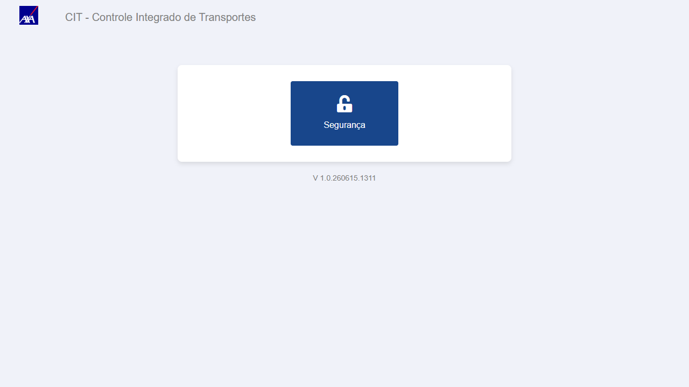
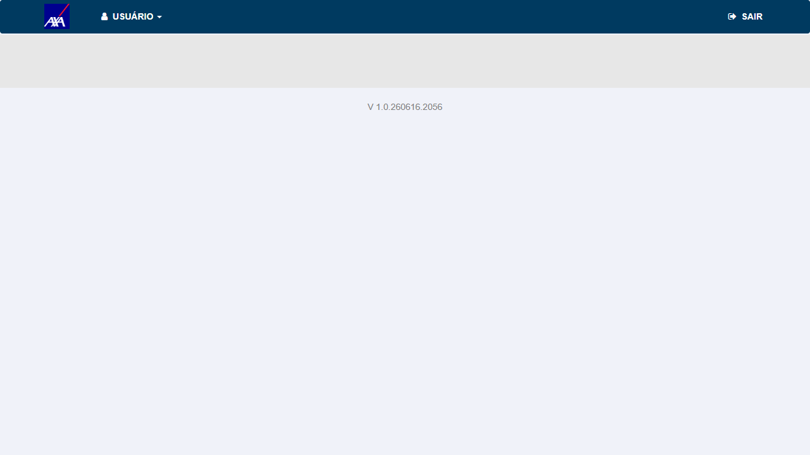
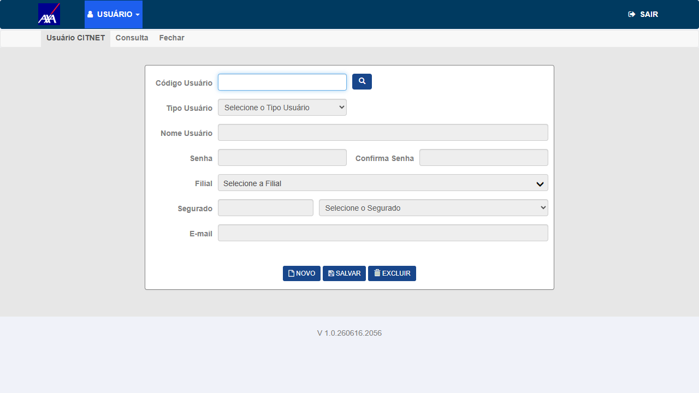
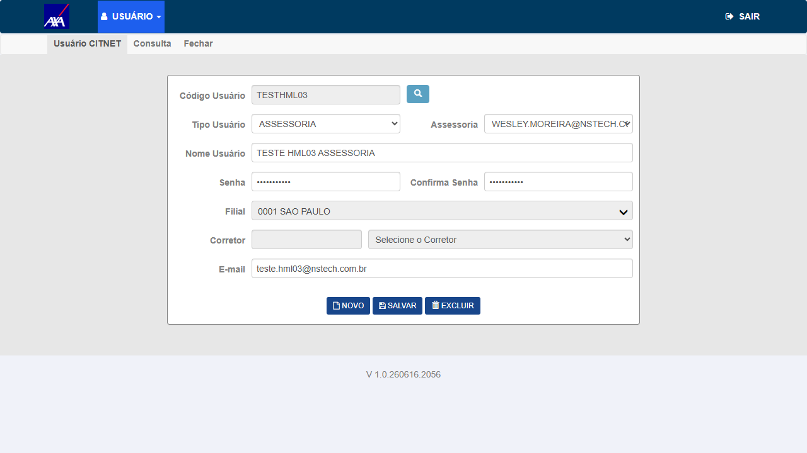
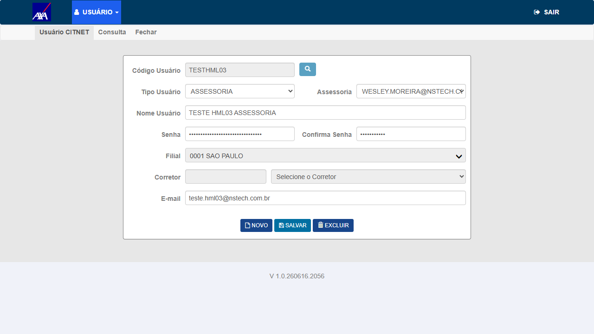

1. Contexto do Bug Original
Problema reportado: Ao tentar cadastrar um usuário do tipo ASSESSORIA no módulo
Segurança → Usuário CITNET do CITWEB, o sistema exibia erro de tela (
SqlException).
O parâmetro u_cpf_cgc estava sendo adicionado ao SQL em
CITNETUsuarioRepository.Inserir mas não era bindado para o tipo ASSESSORIA quando
Ind_tb_cvd_u_cpf_cgc estava ativo e c_org_prd > 0.
Fix: commit 171865a46 — build V 1.0.260616.2056
CITNETUsuarioRepository.Inserir: adicionado binding do parâmetro @u_cpf_cgc
para o tipo ASSESSORIA quando Ind_tb_cvd_u_cpf_cgc = true e c_org_prd > 0.
2. Dados do Cenário de Reteste
| Campo | Valor |
|---|---|
| Ambiente | CITWEB AXA ALFA — https://axa-hml-faturamento.nsseg.com.br/alfa/ |
| Módulo | Segurança → Usuário CITNET (dentro do CITWEB) |
| Usuário de acesso | ADMCIT / MSTCIT (perfil Gestor) |
| Build testado | V 1.0.260616.2056 |
| Código do usuário criado | TESTHML03 |
| Tipo Usuário | ASSESSORIA |
| Assessoria vinculada | WESLEY.MOREIRA@NSTECH.COM.BR - 1 (mesma usada pelo dev no fix) |
| Filial | 0001 SAO PAULO (c_org_prd = 1) |
| Nome Usuário | TESTE HML03 ASSESSORIA |
| teste.hml03@nstech.com.br | |
| Data reteste | 16/06/2026 |
3. Resultado do Reteste
| # | Ação | Resultado obtido | Status |
|---|---|---|---|
| 1 | Login no CITWEB ALFA com ADMCIT/MSTCIT | Login OK — menu com opção "Segurança" visível | ✓ OK |
| 2 | Clicar em Segurança → Usuário CITNET | Módulo Segurança abriu normalmente — tela de Usuário CITNET carregada | ✓ OK |
| 3 | Clicar em "Novo" e preencher: Código=TESTHML03, Tipo=ASSESSORIA, Assessoria=WESLEY.MOREIRA@NSTECH.COM.BR-1, Filial=0001, Nome=TESTE HML03 ASSESSORIA | Formulário preenchido — campo Assessoria populado corretamente após selecionar filial | ✓ OK |
| 4 | Clicar em "Salvar" | Sistema exibiu mensagem: "Inclusão efetuada com sucesso." — sem SqlException, sem erro de tela | ✓ PASS |
4. Confirmação de Sucesso
Usuário ASSESSORIA cadastrado com sucesso. A mensagem "Inclusão efetuada com sucesso."
confirma que o binding do parâmetro
@u_cpf_cgc foi corrigido corretamente para o tipo ASSESSORIA
com c_org_prd = 1 e flag Ind_tb_cvd_u_cpf_cgc ativa.
Fix deployado no ALFA — bug corrigido.
5. Evidências
Clique nas imagens para ampliar.

01 — OK
Login ADMCIT/MSTCIT no CITWEB ALFA — menu com opção "Segurança" visível. Build: V 1.0.260616.2056
Login ADMCIT/MSTCIT no CITWEB ALFA — menu com opção "Segurança" visível. Build: V 1.0.260616.2056

02 — OK
Módulo Segurança aberto — submenu USUÁRIO expandido com opções "Usuário CIT" e "Usuário CITNET"
Módulo Segurança aberto — submenu USUÁRIO expandido com opções "Usuário CIT" e "Usuário CITNET"

03 — OK
Tela Usuário CITNET carregada — formulário pronto para inclusão (botão Novo disponível)
Tela Usuário CITNET carregada — formulário pronto para inclusão (botão Novo disponível)

04 — OK
Formulário preenchido: Tipo=ASSESSORIA, Assessoria=WESLEY.MOREIRA@NSTECH.COM.BR-1, Filial=0001 SAO PAULO, c_org_prd=1
Formulário preenchido: Tipo=ASSESSORIA, Assessoria=WESLEY.MOREIRA@NSTECH.COM.BR-1, Filial=0001 SAO PAULO, c_org_prd=1

05 — PASS
"Inclusão efetuada com sucesso." — sistema aceitou o cadastro de usuário ASSESSORIA sem SqlException. Fix validado no build V 1.0.260616.2056
"Inclusão efetuada com sucesso." — sistema aceitou o cadastro de usuário ASSESSORIA sem SqlException. Fix validado no build V 1.0.260616.2056
6. Conclusão
O fix foi deployado no ALFA (build V 1.0.260616.2056). O cadastro de usuário do tipo ASSESSORIA
no módulo Segurança → Usuário CITNET do CITWEB AXA ALFA ocorre sem SqlException.
O parâmetro @u_cpf_cgc está sendo corretamente bindado para o tipo ASSESSORIA quando
c_org_prd > 0, conforme corrigido no commit 171865a46.